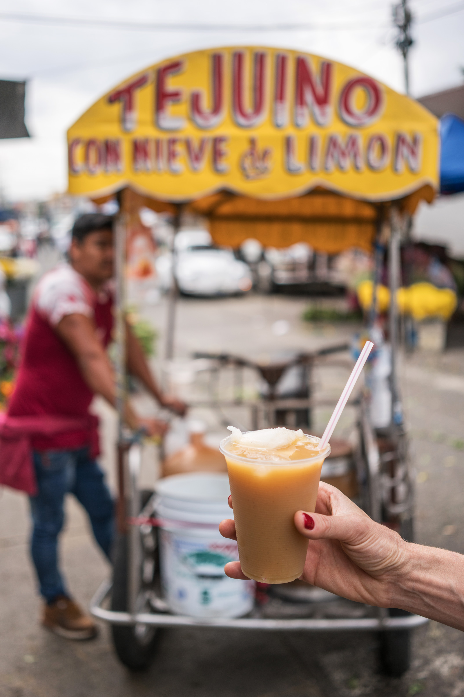

Ingredients
Lime Sorbet
- 10 cups water divide
- 1 cup freshly squeezed lime juice
- 2 cup sugar any sugar works
- 3 lime zested
For the Masa Dough
- 375 g masa nixtamalized
- 300 g water roughly (every dough is different)
For the Tejuino Base
- 500 g prepared masa dough
- 500 g piloncillo or Dark Brown Sugar
- 3 limes juiced
- 2 liters water divided
Description
The secret to making tejuino comes down to fermentation. Just a few days in a cool dark area allows naturally occurring Lactic Acid Producing bacteria to colonize your mixture filling it with gut friendly probiotics and loads of flavor. Originally this drink was allowed to ferment much longer which actually produced alcohol. This version is non-alcoholic.
Recipe credits:
Steps
Lime Sorbet
- In a pot add half of your water, the lime zest, and the sugar. Heat till the sugar dissolves.
- In a large bowl add the sugar mixture, the rest of your water, and the lime juice. Mix well and place in the freezer.
- Each hour give the bowl a stir breaking up any ice particles that have formed. Once your mixture has turned into a soft icy with no freestanding liquid place it in the freezer overnight to firm up.
Masa Dough
- Slowly add a little water to your masa flour and mix well. Once you can form a smooth dough ball that can easily be torn apart without crumbling your masa dough is finished. Try not to add to much water.
Making the Tejuino Base
- in a pot add 75% of your water (reserving 25% for later). Add the piloncillo (or dark brown sugar) and heat on a medium fire till sugar dissolves
- In your blender, add the masa dough along with the rest of your water. Blend till smooth.
- Add the blended masa liquid to your sugar water stirring constantly. It can burn easily if left unattended. Stir till your mixture thickens. The bubbles will look like lava bubbles as it gets thicker.
- Once your mixture has properly thickened turn off the heat and add the lime juice. Stir and place in a non reactive container (ceramic, clay) to cool.
- Once cooled, cover with cheese cloth and place it in a cool dark place to ferment for 2-3 days.
- After it's finished fermenting, take your mixture and add it to your blender with a little water. I generally add 5 cups of mix to 1-2 cups of water then blend. Your end result should be a liquid that seems fairly thick.
- Place the blended liquid into a container and fill it with ice. The ice will help thin it out as well. Time to serve!!!
How do you drink this drink
- Fill a 32oz glass with ice. Add 1/2 tsp kosher salt, and the juice from 4 limes. Fill the cup with tejuino and mix by pouring the contents into an empty cup that's the same size. Do this several time to mix it well.
- Once mixed serve the tejuino in smaller glasses, that have been filled with ice and rimmed with tajin seasoning (optional). Add the Nieve de limon to the top and enjoy!!!